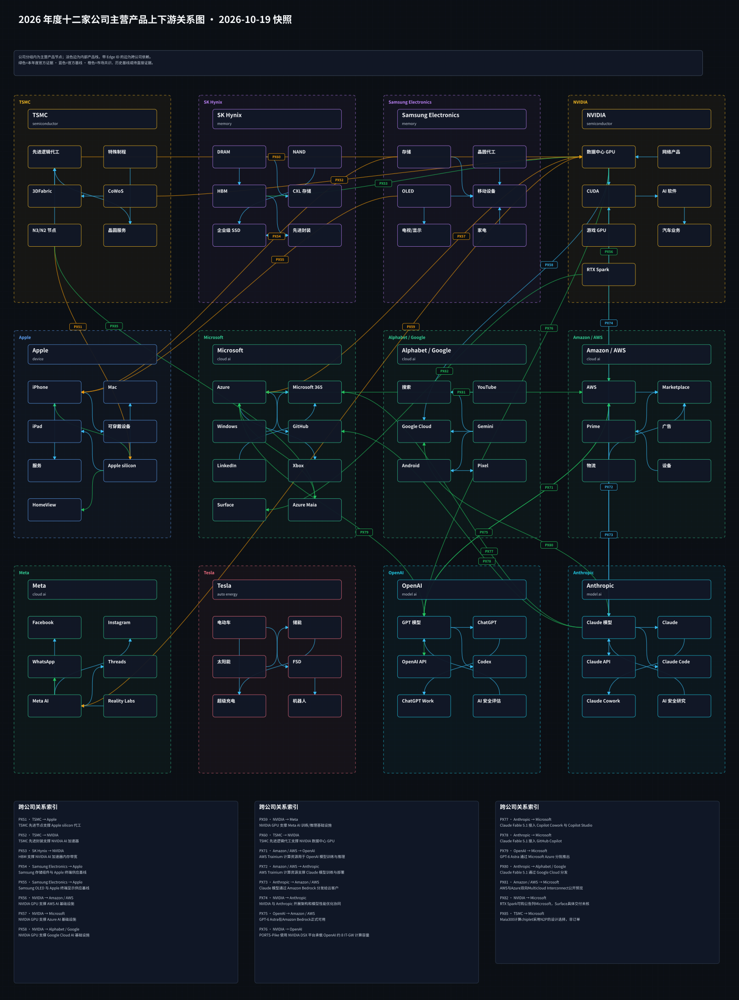
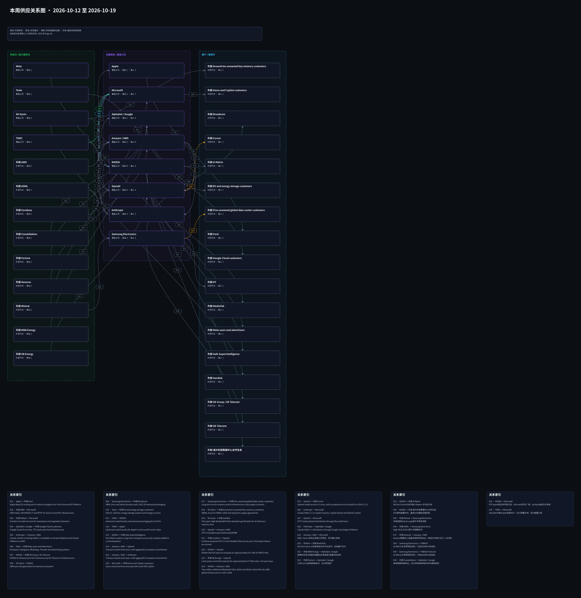

周一晨间科技巨头简报
- 覆盖期间：2026-10-12 至 2026-10-19（Asia/Shanghai；10/12 00:00起，10/19 09:00排他截止；本期为口径切换过渡周）
- 生成时间：2026-10-19 16:06:58（Asia/Shanghai；09:00截止口径补跑版）
- 截止时点：2026-10-19 09:00（Asia/Shanghai，不含该时刻）
- 本期文件：reports/2026-10-19_weekly_morning_brief.md
- 阅读口径：12家公司各0-5条，16件独立事项、19个公司展示块；头条提炼12件，不追求零遗漏。
- 市场数据：10家上市公司和3个当地价格指数已接入；按真实收盘计算价格回报、相对回报及价格波动，44/40/42个收盘样本。未计现金分红；当前提取版本，历史PIT未认证。
- 采集版本：本期采用已冻结的10/19 10:04行情批次；截止规则于当日下午改为09:00，未虚构09:00原始快照。日线截至10/16，各次实际取数时间保留于来源记录。
- 比较版本：上期使用10/12本地试验/Wind补跑稿冻结副本；它不是当时已正式发布的前瞻信号。
0. 市场反应与投资假设
价格观察：当前提取的历史收盘版本，历史PIT未认证；不等于新闻导致涨跌
信息截止（排他）：2026-10-19T09:00:00+08:00；快照 SHA256：54040691d7d2679fbb927440c82e165f85c2ae525a27ee8e37e1f2e8fbabaee7。
| 公司 | 证券 / 币种 / 基准 | 回报口径 / 数据版本 | 本周回报 | 相对基准回报 | RV20 | RV20周变化 | 本周冲击 | 本周交易日 / 收盘样本 | 末次收盘（本币） | 入选事件 | 限制 |
|---|---|---|---|---|---|---|---|---|---|---|---|
| Apple | AAPL.O / USD / 纳斯达克指数（IXIC.GI） | 价格回报；当前提取版本；历史PIT未认证 | +2.03% | +6.51个百分点 | 16.26% | -0.16个百分点 | 10.40% | 5日 / 44个收盘 | 2026-10-16 · 343.46 | AP-HOME、AP-OA-CASE | 对照纳斯达克综合指数；未复权价格口径、未计现金分红；除权除息可影响波动。当前提取版本，历史PIT未认证。 |
| Microsoft | MSFT.O / USD / 纳斯达克指数（IXIC.GI） | 价格回报；当前提取版本；历史PIT未认证 | -1.13% | +3.36个百分点 | 22.22% | -0.34个百分点 | 22.08% | 5日 / 44个收盘 | 2026-10-16 · 529.05 | MS-MAIA、NV-RTX | 对照纳斯达克综合指数；未复权价格口径、未计现金分红；除权除息可影响波动。当前提取版本，历史PIT未认证。 |
| Alphabet / Google | GOOGL.O / USD / 纳斯达克指数（IXIC.GI） | 价格回报；当前提取版本；历史PIT未认证 | -3.15% | +1.33个百分点 | 22.83% | -1.13个百分点 | 22.13% | 5日 / 44个收盘 | 2026-10-16 · 340.59 | GOO-ARGON | 对照纳斯达克综合指数；未复权价格口径、未计现金分红；除权除息可影响波动。当前提取版本，历史PIT未认证。 |
| Amazon / AWS | AMZN.O / USD / 纳斯达克指数（IXIC.GI） | 价格回报；当前提取版本；历史PIT未认证 | -4.74% | -0.26个百分点 | 24.35% | -1.06个百分点 | 20.18% | 5日 / 44个收盘 | 2026-10-16 · 250 | AMZ-BEE | 对照纳斯达克综合指数；未复权价格口径、未计现金分红；除权除息可影响波动。当前提取版本，历史PIT未认证。 |
| Meta | META.O / USD / 纳斯达克指数（IXIC.GI） | 价格回报；当前提取版本；历史PIT未认证 | -1.30% | +3.18个百分点 | 55.99% | +3.79个百分点 | 46.68% | 5日 / 44个收盘 | 2026-10-16 · 709.325 | META-WONDER | 对照纳斯达克综合指数；未复权价格口径、未计现金分红；除权除息可影响波动。当前提取版本，历史PIT未认证。 |
| NVIDIA | NVDA.O / USD / 纳斯达克指数（IXIC.GI） | 价格回报；当前提取版本；历史PIT未认证 | -6.61% | -2.13个百分点 | 24.81% | -0.47个百分点 | 30.49% | 5日 / 44个收盘 | 2026-10-16 · 214.13 | NV-RTX、NV-OCP | 对照纳斯达克综合指数；未复权价格口径、未计现金分红；除权除息可影响波动。当前提取版本，历史PIT未认证。 |
| Tesla | TSLA.O / USD / 纳斯达克指数（IXIC.GI） | 价格回报；当前提取版本；历史PIT未认证 | -7.31% | -2.83个百分点 | 31.44% | +1.00个百分点 | 25.69% | 5日 / 44个收盘 | 2026-10-16 · 354.72 | TSLA-CLASS | 对照纳斯达克综合指数；未复权价格口径、未计现金分红；除权除息可影响波动。当前提取版本，历史PIT未认证。 |
| OpenAI | 未建立直接证券映射 | 不适用 | 不适用：未建立直接证券映射 | 不适用：未建立直接证券映射 | 不适用：未建立直接证券映射 | 不适用：未建立直接证券映射 | 不适用：未建立直接证券映射 | 不适用 | 不适用 | AP-OA-CASE、OA-STATES | 未建立可核独立证券映射；不以合作方股价代替。 |
| Anthropic | 未建立直接证券映射 | 不适用 | 不适用：未建立直接证券映射 | 不适用：未建立直接证券映射 | 不适用：未建立直接证券映射 | 不适用：未建立直接证券映射 | 不适用：未建立直接证券映射 | 不适用 | 不适用 | AN-EVAL、AN-PENTAGON、AN-SG | 未建立可核独立证券映射；不以合作方股价代替。 |
| Samsung Electronics | 005930.KS / KRW / 韩国综合指数（KS11.KS） | 价格回报；当前提取版本；历史PIT未认证 | -17.75% | -3.29个百分点 | 60.50% | +18.81个百分点 | 96.55% | 5日 / 40个收盘 | 2026-10-16 · 215,500 | 无入选项 | 对照韩国综合指数KOSPI；未复权价格口径、未计现金分红；除权除息可影响波动。当前提取版本，历史PIT未认证。 |
| SK Hynix | 000660.KS / KRW / 韩国综合指数（KS11.KS） | 价格回报；当前提取版本；历史PIT未认证 | -24.33% | -9.87个百分点 | 69.04% | +19.65个百分点 | 117.84% | 5日 / 40个收盘 | 2026-10-16 · 1,272,000 | SK-OCP、SK-US-CHINA | 对照韩国综合指数KOSPI；未复权价格口径、未计现金分红；除权除息可影响波动。当前提取版本，历史PIT未认证。 |
| TSMC | 2330.TW / TWD / 台湾加权指数（TWII.TW） | 价格回报；当前提取版本；历史PIT未认证 | -5.10% | -0.63个百分点 | 20.51% | +1.53个百分点 | 21.18% | 5日 / 42个收盘 | 2026-10-16 · 2,420 | MS-MAIA、TSM-Q3 | 对照台湾加权指数；未复权价格口径、未计现金分红；除权除息可影响波动。当前提取版本，历史PIT未认证。 |
RV20与本周冲击均为年化值；冲击为日对数收益均方根，非去均值波动率。RV20变化可能来自旧冲击退出窗口。缺失不等于零。 本期价格口径：未复权收盘的简单收益，未计现金分红；相对基准回报为同币种、相同本地交易日的价格回报之差。RV20及冲击也采用价格收益，除权除息可能影响数值。它们不冒充含分红总回报，不进入严格PIT回测或新闻因果归因。基准按用户2026-10-19指示固定：纳斯达克综合IXIC.GI、韩国综合KS11.KS、台湾加权TWII.TW；本期没有日本上市标的。
- H-MAIA-COST · Microsoft · MS-MAIA
- 方向观点：abstain；波动观点：uncertain
- 预期基线（company_guidance）：微软计划Maia300于2027开始部署并扩大至多吉瓦规模；是公司计划，不是共识或已实现成本。
- 传导：实际部署、利用率与软件迁移有望影响推理单位成本；性能宣传不直接等于毛利率改善。
- 财务量级：未披露可核的相关成本基数、节省总额或订单量，不估算利润增量。
- 兑现窗口：2027部署进程及后续正式财报周期。
- 证伪条件：若部署延后、利用率不足，或同质量任务的总成本未改善，则假设减弱。
- 其他解释：其他硬件、模型压缩、电价及工作负载结构也可能解释单位成本变化。
- 证据：MAIA
- H-TSM-Q4-CONVERSION · TSMC · TSM-Q3
- 方向观点：abstain；波动观点：uncertain
- 预期基线（company_guidance）：公司Q4收入指引523亿至543亿美元，汇率假设1美元兑31.8新台币；不是已实现收入或市场共识。
- 传导：先进节点需求需转成实际收入、现金流和可持续毛利；不能由总收入独自归因AI。
- 财务量级：仅保留披露的美元区间；Q3为TIFRS合并、董事会尚未批准的发布数字，不补缺失现金流。
- 兑现窗口：下一次季度结果与Q4正式披露周期。
- 证伪条件：实际收入偏离指引、现金转化弱或毛利依赖不可持续项目时，下调持续性判断。
- 其他解释：汇率、产品组合、产能利用率和价格也会影响结果；没有公布前冻结共识或合格总回报。
- 证据：TSMQ3 后验结果另存，当前页不载入。评估预注册：发布后首个常规开盘起5个交易日超额回报、20个交易日波动；尚非交易收益承诺。
- 证据 MAIA：来源；logs/2026-10-19_v13.json；版本 本期实际读取的具日期原文版本，已定位完整相关段落和脚注。；可得 2026-10-12T13:01:29+00:00；SHA256
287d2c66ec2d5351f4dcd8368e6616a4a1c875111d32fbbb53a6a193a7ce972e；定位 L7-18、L30、L35；Maia200现状、300未来部署、N2P设计选择分开。；依据 原始正文日期及必要时间元数据；具体版本均在截止前，推荐栏和后来行情隔离。。 - 证据 TSMQ3：来源；logs/2026-10-19_v01.json；版本 本期实际读取的具日期原文版本，已定位完整相关段落和脚注。；可得 [2026-10-14T10:00:00+00:00, 2026-10-16T12:00:00+00:00)；SHA256
3114a8a9136edf0be681fa91caca8adf7b849a3d7077c3b8b8b3ca0b5bc73907；定位 L7-23及30-44；2026Q3 TIFRS合并、NT$million原表、董事会未批准脚注、Q4美元指引及汇率假设。；依据 原始正文日期及必要时间元数据；具体版本均在截止前，推荐栏和后来行情隔离。。 - 行情观察 PRICE_AAPL_O：Wind API；logs/2026-10-19_market_observations/AAPL_O.json；实际取数 2026-10-19T02:05:03.108501+00:00；SHA256
6ecf450a3a471abafe49f9958b103214487498c074c26f409f17ebbe76e147bb；当前提取版本；历史PIT未认证；价格回报未计现金分红，不作含分红总回报。。 - 行情观察 PRICE_MSFT_O：Wind API；logs/2026-10-19_market_observations/MSFT_O.json；实际取数 2026-10-19T02:05:03.108501+00:00；SHA256
a817d6e931622bbe2d24e66e95613cf70908564c83a3f054ad9ea885f53c6866；当前提取版本；历史PIT未认证；价格回报未计现金分红，不作含分红总回报。。 - 行情观察 PRICE_GOOGL_O：Wind API；logs/2026-10-19_market_observations/GOOGL_O.json；实际取数 2026-10-19T02:05:03.108501+00:00；SHA256
8c9703a5da3ecfa23b4f4e163164ee9055246dcb997538056baa3b8f8afcb14f；当前提取版本；历史PIT未认证；价格回报未计现金分红，不作含分红总回报。。 - 行情观察 PRICE_AMZN_O：Wind API；logs/2026-10-19_market_observations/AMZN_O.json；实际取数 2026-10-19T02:05:03.108501+00:00；SHA256
19d148d41211fa59dc7790eff2f4fdcddcfd3b7e3f62d5f53dd4e2850652af40；当前提取版本；历史PIT未认证；价格回报未计现金分红，不作含分红总回报。。 - 行情观察 PRICE_META_O：Wind API；logs/2026-10-19_market_observations/META_O.json；实际取数 2026-10-19T02:05:03.108501+00:00；SHA256
110670dc4a5ee5308546863ba6db747ad037e1c038b901d6cec1c1a81be739bf；当前提取版本；历史PIT未认证；价格回报未计现金分红，不作含分红总回报。。 - 行情观察 PRICE_NVDA_O：Wind API；logs/2026-10-19_market_observations/NVDA_O.json；实际取数 2026-10-19T02:05:03.108501+00:00；SHA256
c0875aab83a1b7e447ab50328b17e2614d5bf67dbe045281a954baeccfc771b2；当前提取版本；历史PIT未认证；价格回报未计现金分红，不作含分红总回报。。 - 行情观察 PRICE_TSLA_O：Wind API；logs/2026-10-19_market_observations/TSLA_O.json；实际取数 2026-10-19T02:05:03.108501+00:00；SHA256
116c56c3c7e9e93d7c6e00566012576a4fff3b074b4652ef87a65d27b24d2685；当前提取版本；历史PIT未认证；价格回报未计现金分红，不作含分红总回报。。 - 行情观察 PRICE_005930_KS：Wind API；logs/2026-10-19_market_observations/005930_KS.json；实际取数 2026-10-19T02:05:04.863358+00:00；SHA256
cc5e3d446a0a45761fcfddec6224fa3f981040e7e7f2d5a479962372eedbb1b2；当前提取版本；历史PIT未认证；价格回报未计现金分红，不作含分红总回报。。 - 行情观察 PRICE_000660_KS：Wind API；logs/2026-10-19_market_observations/000660_KS.json；实际取数 2026-10-19T02:05:04.863358+00:00；SHA256
e625d4dab78ce273e29eed16257b4eb5eb2027f81a05adeb9504f71dd182f3d0；当前提取版本；历史PIT未认证；价格回报未计现金分红，不作含分红总回报。。 - 行情观察 PRICE_2330_TW：Wind API；logs/2026-10-19_market_observations/2330_TW.json；实际取数 2026-10-19T02:05:06.638669+00:00；SHA256
04441e10f9e8c465ade80f3aaba87a5a649b3052ead1fc5a8495e152c27d21f7；当前提取版本；历史PIT未认证；价格回报未计现金分红，不作含分红总回报。。
1. 本周最重要的 12 件事
- TSMC：TSMC披露三季度结果及四季度收入指引。 重要性：已披露盈利规模与先进制程需求提供观察基准；持续性仍需现金流、节点良率和后续季度兑现。 来源
- Microsoft / TSMC：Microsoft披露Maia生产现状与2027部署计划。 重要性：自研推理硬件可能改善微软算力成本结构，并增加先进制程机会；兑现仍取决于良率、软件迁移、利用率及实际部署。 来源
- Alphabet / Google：Google向开发者开放Gemini 4 Argon。 重要性：新模型增加企业与开发工具竞争压力；收入与成本效果需结合使用量、质量、重试和付费迁移。 来源
- Meta：Meta发布Muse Wonder系列代理模型。 重要性：代理模型为高额研发投入增加商业化验证点；竞争力需经独立任务质量、付费采用和安全表现检验。 来源
- Apple：Apple开放HomeView预售，11月供货仍属计划。 重要性：家庭AI入口扩展可能提高设备与服务使用，但销量、订阅转化和实际任务价值尚未披露。 来源
- OpenAI：Iowa等州宣布对OpenAI提起消费者保护诉讼。 重要性：消费者保护诉讼可能增加合规、产品限制与法律成本；责任和经济影响须等待程序与披露。 来源
- Apple / OpenAI：OpenAI与Apple知识产权案新增指控和否认。 重要性：硬件竞争中的知识产权与人才争议可能增加诉讼及产品审查成本；损失金额和上市影响未知。 来源
- SK Hynix：报道涉及SK Hynix设备许可与美国NAND投资。 重要性：许可范围与资金安排可能影响海外NAND投资路径；不能据报道推算新增产能或确定资本支出。 来源
- NVIDIA：NVIDIA向OCP贡献Vera Rubin机架设计。 重要性：开放架构可能降低集成摩擦并扩大生态采用；能否转成收入仍取决于建设、供电、交付和客户投资。 来源
- Anthropic：Anthropic向METR提供驻场评估访问。 重要性：更深入评估可能提高治理透明度，但有效性取决于实际访问、删节争议及公开结果。 来源
- Anthropic：Anthropic申请重审安全供应链风险认定裁决。 重要性：政府和相关客户准入仍存在法律不确定性；不能以重审申请推断业务已恢复。 来源
- Tesla：Tesla FSD集体诉讼资格裁决被撤销。 重要性：集体追索方式受限可能改变短期诉讼压力，但实体责任、个别请求及监管约束并未因此消除。 来源
2. 投资判断速览
| 公司 | 本周变化 | 影响指标 | 预期差 | 判断 | 验证条件 |
|---|---|---|---|---|---|
| Apple | Apple开放HomeView预售，11月供货仍属计划；OpenAI与Apple知识产权案新增指控和否认 | 实际供货、活跃家庭、服务使用和隐私合规；取证范围、实体裁判、开发进度与法律费用 | 未取得公布前冻结的同口径共识 | 仅业务判断；价格方向弃权、波动不确定 | 核11月13日实际地区供货、独立任务体验与后续采用数据。；跟踪可核法院文件及双方后续回应，区分取证许可与实体责任。 |
| Microsoft | Microsoft披露Maia生产现状与2027部署计划；RTX Spark笔记本从发布进入可购公告阶段 | 实际部署、单位任务总成本、利用率与先进节点订单；地区/SKU供货、独立任务成本、出货与付费采用 | 未取得公布前冻结的同口径共识 | 仅业务判断；价格方向弃权、波动不确定 | 跟踪2027实际部署、同任务质量下成本及财报兑现；不将公司性能宣传等同毛利提升。；核Microsoft具体SKU和地区可购、真实交付及固定质量门槛的任务测试。 |
| Alphabet / Google | Google向开发者开放Gemini 4 Argon | 付费采用、同任务成本、质量与工具留存 | 未取得公布前冻结的同口径共识 | 仅业务判断；价格方向弃权、波动不确定 | 在固定任务和质量门槛下检验真实费用、完成率及后续采用；不直接套用公司基准。 |
| Amazon / AWS | Amazon发布Bee两款AI设备，付费功能另计 | 设备销量、Pro转化、留存与真实隐私处理 | 未取得公布前冻结的同口径共识 | 仅业务判断；价格方向弃权、波动不确定 | 核Eclipse实际供货、订阅转化及转录删除/分享控制，不把硬件价格当全部使用成本。 |
| Meta | Meta发布Muse Wonder系列代理模型 | 开发者采用、订阅留存、任务质量和安全评估 | 未取得公布前冻结的同口径共识 | 仅业务判断；价格方向弃权、波动不确定 | 跟踪完整安全报告、独立复测与Muse助手实际推出范围，不把模型发布当收入兑现。 |
| NVIDIA | RTX Spark笔记本从发布进入可购公告阶段；NVIDIA向OCP贡献Vera Rubin机架设计 | 地区/SKU供货、独立任务成本、出货与付费采用；标准采用、系统交付、客户部署与集成成本 | 未取得公布前冻结的同口径共识 | 仅业务判断；价格方向弃权、波动不确定 | 核Microsoft具体SKU和地区可购、真实交付及固定质量门槛的任务测试。；跟踪具名部署和交付披露，不将开放标准参与者直接连成采购客户。 |
| Tesla | Tesla FSD集体诉讼资格裁决被撤销 | 后续诉讼程序、个别请求、责任与赔偿范围 | 未取得公布前冻结的同口径共识 | 仅业务判断；价格方向弃权、波动不确定 | 跟踪可核法院文件及后续程序；不把程序胜利外推为实体免责。 |
| OpenAI | OpenAI与Apple知识产权案新增指控和否认；Iowa等州宣布对OpenAI提起消费者保护诉讼 | 取证范围、实体裁判、开发进度与法律费用；诉讼请求、法院裁判、产品措施及法律成本 | 未取得公布前冻结的同口径共识 | 仅业务判断；价格方向弃权、波动不确定 | 跟踪可核法院文件及双方后续回应，区分取证许可与实体责任。；核起诉状、法院后续裁判与公司回应，区分指控、临时措施及最终责任。 |
| Anthropic | Anthropic向METR提供驻场评估访问；Anthropic申请重审安全供应链风险认定裁决；Anthropic开设新加坡办公室并签署MOU | 公开评估、访问限制、事件披露与删节情况；重审决定、认定效力与合同准入；企业采用、实际交流交付与付费客户 | 未取得公布前冻结的同口径共识 | 仅业务判断；价格方向弃权、波动不确定 | 跟踪METR实际报告和对访问/删节的说明；不能仅因设立安排就认定风险下降。；核重审是否受理、最终裁判和实际客户资格变化，不提前计算恢复收入。；跟踪MOU实际项目、采购或收入披露；不将合作意向换算订单。 |
| Samsung Electronics | 本期未筛选到经核实的重要更新；有限范围见第3节 | 不新增指标 | 暂不可验证 | 不等于没有变化或风险解除 | 有合格具体版本的重要新披露再核 |
| SK Hynix | SK Hynix展示CXL内存池与机架级PoC；报道涉及SK Hynix设备许可与美国NAND投资 | 客户验证、量产时间、系统总成本与实际订单；许可范围、董事会投资决议、产能与资金来源 | 未取得公布前冻结的同口径共识 | 仅业务判断；价格方向弃权、波动不确定 | 跟踪独立客户部署及量产披露，区分PoC、展示品与已发货产品。；核许可证、公司最终投资披露和投产安排；不把媒体方案写成已批准扩产。 |
| TSMC | Microsoft披露Maia生产现状与2027部署计划；TSMC披露三季度结果及四季度收入指引 | 实际部署、单位任务总成本、利用率与先进节点订单；收入、毛利率、现金流、先进节点产能利用率 | 未取得公布前冻结的同口径共识 | 仅业务判断；价格方向弃权、波动不确定 | 跟踪2027实际部署、同任务质量下成本及财报兑现；不将公司性能宣传等同毛利提升。；核董事会后续批准、季度现金流及Q4指引兑现，不混用新台币与美元或当成审计完成结果。 |
3. 发生变化的公司
3.1 Apple
- 日期：2026-10-13（已知时区按上海折算；其余保留来源日期精度，详见逐条证据）
- 事件：Apple发布搭载Siri AI的HomeView并开放首批市场预售，计划11月13日供应。个人上下文功能需配对支持Apple Intelligence的iPhone或iPad；Siri AI首发为英语，欧盟不在销售范围。预售不等于已交付。
- 投资影响：家庭AI入口扩展可能提高设备与服务使用，但销量、订阅转化和实际任务价值尚未披露。
- 影响指标：实际供货、活跃家庭、服务使用和隐私合规
- 预期差：未取得公布前冻结的同口径共识；公司计划、指引与未知分开，不认定未定价。
- 验证条件：核11月13日实际地区供货、独立任务体验与后续采用数据。
- 可信度：公司具日期正文及完整可用性条款；独立媒体校准。隐私保护为公司陈述，不作独立认证。
- 来源：核验来源
- 日期：2026-10-14（已知时区按上海折算；其余保留来源日期精度，详见逐条证据）
- 事件：Reuters报道，OpenAI在既有Apple商业秘密诉讼中新指控一名转往Apple的前员工外传100余份未发布产品文件。Apple称未找到支持指控的证据，并否认其服务器发现相关文件。双方互相指控及有限取证进展不等于法院认定侵权。
- 投资影响：硬件竞争中的知识产权与人才争议可能增加诉讼及产品审查成本；损失金额和上市影响未知。
- 影响指标：取证范围、实体裁判、开发进度与法律费用
- 预期差：未取得公布前冻结的同口径共识；公司计划、指引与未知分开，不认定未定价。
- 验证条件：跟踪可核法院文件及双方后续回应，区分取证许可与实体责任。
- 可信度：Reuters完整具日期报道保留双方回应；本轮未直接取得法院原件，底层指控未独立确认。
- 来源：核验来源
3.2 Microsoft
- 日期：2026-10-12（已知时区按上海折算；其余保留来源日期精度，详见逐条证据）
- 事件：Microsoft称Maia 200已服务Copilot等生产工作负载；Maia 300计划2027年开始生产部署，并从2027年扩大至多吉瓦规模。其计算chiplet明确采用TSMC N2P。路线选择与部署目标不是已实现产能、已知订单金额或经独立验证的成本节省。
- 投资影响：自研推理硬件可能改善微软算力成本结构，并增加先进制程机会；兑现仍取决于良率、软件迁移、利用率及实际部署。
- 影响指标：实际部署、单位任务总成本、利用率与先进节点订单
- 预期差：未取得公布前冻结的同口径共识；公司计划、指引与未知分开，不认定未定价。
- 验证条件：跟踪2027实际部署、同任务质量下成本及财报兑现；不将公司性能宣传等同毛利提升。
- 可信度：公司正文、带时区发布时间元数据及Reuters交叉；TSMC设计归属据微软披露，非客户订单确认。
- 来源：核验来源
- 日期：2026-10-16（已知时区按上海折算；其余保留来源日期精度，详见逐条证据）
- 事件：NVIDIA宣布RTX Spark笔记本开始可购，厂商名单包括Microsoft、ASUS、Dell、HP、Lenovo及MSI。相较上周预售计划，这是可用性阶段的新披露；不据此认定每个Surface型号、所有地区或客户订单均已交付。
- 投资影响：本地推理进入产品销售验证期；实际出货、任务成本和云端替代程度比理论性能更关键。
- 影响指标：地区/SKU供货、独立任务成本、出货与付费采用
- 预期差：未取得公布前冻结的同口径共识；公司计划、指引与未知分开，不认定未定价。
- 验证条件：核Microsoft具体SKU和地区可购、真实交付及固定质量门槛的任务测试。
- 可信度：NVIDIA具日期可购公告明确列厂商；Surface具体交付尚未独立核验，不推断订单金额。
- 来源：核验来源
3.3 Alphabet / Google
- 日期：2026-10-13（已知时区按上海折算；其余保留来源日期精度，详见逐条证据）
- 事件：Google宣布开发者可通过付费Gemini API在Google AI Studio及Android Studio使用Gemini 4 Argon；Google AI Ultra订阅者还可在AI Studio和Antigravity试用。此次是开发者可用性扩展，不能与较早模型介绍混为首次公布全部能力。
- 投资影响：新模型增加企业与开发工具竞争压力；收入与成本效果需结合使用量、质量、重试和付费迁移。
- 影响指标：付费采用、同任务成本、质量与工具留存
- 预期差：未取得公布前冻结的同口径共识；公司计划、指引与未知分开，不认定未定价。
- 验证条件：在固定任务和质量门槛下检验真实费用、完成率及后续采用；不直接套用公司基准。
- 可信度：具日期开发者原文及Reuters交叉；保留付费和订阅条件，不把性能自评当独立结果。
- 来源：核验来源
3.4 Amazon / AWS
- 日期：2026-10-15（已知时区按上海折算；其余保留来源日期精度，详见逐条证据）
- 事件：Amazon发布Bee Frontier和Bee Eclipse：Frontier售价74.99美元并已可购，Eclipse起价99.99美元但仍为即将供应。基础摘要和14天记忆不另收费；Alexa+、Amazon.com及第三方集成等完整功能需要每月11.99美元Bee Pro订阅。原始音频实时处理后删除是公司声称，不等于不保留转录。
- 投资影响：随身AI入口可增加服务与购物分发，但订阅门槛、录音同意和留存信任决定实际采用。
- 影响指标：设备销量、Pro转化、留存与真实隐私处理
- 预期差：未取得公布前冻结的同口径共识；公司计划、指引与未知分开，不认定未定价。
- 验证条件：核Eclipse实际供货、订阅转化及转录删除/分享控制，不把硬件价格当全部使用成本。
- 可信度：公司正文、精确发布时间元数据及独立报道校准；可购、未来供应、音频与转录保留分别处理。
- 来源：核验来源
3.5 Meta
- 日期：2026-10-13（已知时区按上海折算；其余保留来源日期精度，详见逐条证据）
- 事件：Meta推出Muse Wonder与Muse Wonder Full：前者在Meta Model API及Muse Code提供，Full面向Muse Code订阅者。进入Muse助手仍属后续推出、先面向订阅者；性能与安全效果目前主要是公司表述，完整安全评估报告仍待公布。
- 投资影响：代理模型为高额研发投入增加商业化验证点；竞争力需经独立任务质量、付费采用和安全表现检验。
- 影响指标：开发者采用、订阅留存、任务质量和安全评估
- 预期差：未取得公布前冻结的同口径共识；公司计划、指引与未知分开，不认定未定价。
- 验证条件：跟踪完整安全报告、独立复测与Muse助手实际推出范围，不把模型发布当收入兑现。
- 可信度：官方原文及带时区发布/更新元数据，Axios作重要性校准；未使用第三方原文支撑宣传基准。
- 来源：核验来源
3.6 NVIDIA
- 日期：2026-10-16（已知时区按上海折算；其余保留来源日期精度，详见逐条证据）
- 事件：NVIDIA宣布RTX Spark笔记本开始可购，厂商名单包括Microsoft、ASUS、Dell、HP、Lenovo及MSI。相较上周预售计划，这是可用性阶段的新披露；不据此认定每个Surface型号、所有地区或客户订单均已交付。
- 投资影响：本地推理进入产品销售验证期；实际出货、任务成本和云端替代程度比理论性能更关键。
- 影响指标：地区/SKU供货、独立任务成本、出货与付费采用
- 预期差：未取得公布前冻结的同口径共识；公司计划、指引与未知分开，不认定未定价。
- 验证条件：核Microsoft具体SKU和地区可购、真实交付及固定质量门槛的任务测试。
- 可信度：NVIDIA具日期可购公告明确列厂商；Surface具体交付尚未独立核验，不推断订单金额。
- 来源：核验来源
- 日期：2026-10-12（已知时区按上海折算；其余保留来源日期精度，详见逐条证据）
- 事件：NVIDIA在OCP峰会宣布通过开放MGX架构贡献Vera Rubin机架及计算托盘设计，推动AI基础设施设计标准化。设计贡献与生态协作不等于具名客户采购订单、已部署容量或已实现销售。
- 投资影响：开放架构可能降低集成摩擦并扩大生态采用；能否转成收入仍取决于建设、供电、交付和客户投资。
- 影响指标：标准采用、系统交付、客户部署与集成成本
- 预期差：未取得公布前冻结的同口径共识；公司计划、指引与未知分开，不认定未定价。
- 验证条件：跟踪具名部署和交付披露，不将开放标准参与者直接连成采购客户。
- 可信度：官方具日期正文、发布/更新元数据及独立技术媒体校准；限于设计贡献，不确认新增采购。
- 来源：核验来源
3.7 Tesla
- 日期：2026-10-17（已知时区按上海折算；其余保留来源日期精度，详见逐条证据）
- 事件：Reuters报道，美国第九巡回上诉法院撤销加州FSD买家集体诉讼资格裁定，理由涉及买家是否实际接触有关宣传的个别差异。案件仍待决，裁定不涉及虚假宣传指控的实体是非，也不代表FSD技术或监管许可获得认证。
- 投资影响：集体追索方式受限可能改变短期诉讼压力，但实体责任、个别请求及监管约束并未因此消除。
- 影响指标：后续诉讼程序、个别请求、责任与赔偿范围
- 预期差：未取得公布前冻结的同口径共识；公司计划、指引与未知分开，不认定未定价。
- 验证条件：跟踪可核法院文件及后续程序；不把程序胜利外推为实体免责。
- 可信度：Reuters完整报道明示程序与实体区分、Tesla否认及原告回应；未直接取得法院原件。
- 来源：核验来源
3.8 OpenAI
- 日期：2026-10-14（已知时区按上海折算；其余保留来源日期精度，详见逐条证据）
- 事件：Reuters报道，OpenAI在既有Apple商业秘密诉讼中新指控一名转往Apple的前员工外传100余份未发布产品文件。Apple称未找到支持指控的证据，并否认其服务器发现相关文件。双方互相指控及有限取证进展不等于法院认定侵权。
- 投资影响：硬件竞争中的知识产权与人才争议可能增加诉讼及产品审查成本；损失金额和上市影响未知。
- 影响指标：取证范围、实体裁判、开发进度与法律费用
- 预期差：未取得公布前冻结的同口径共识；公司计划、指引与未知分开，不认定未定价。
- 验证条件：跟踪可核法院文件及双方后续回应，区分取证许可与实体责任。
- 可信度：Reuters完整具日期报道保留双方回应；本轮未直接取得法院原件，底层指控未独立确认。
- 来源：核验来源
- 日期：2026-10-14（已知时区按上海折算；其余保留来源日期精度，详见逐条证据）
- 事件：Iowa总检察长宣布对OpenAI起诉，指控其对ChatGPT安全性的表述误导家长与消费者；公告还列出其他州分别起诉。此处确认的是诉讼宣布及指控，未将所述伤害、违法或赔偿视为法院已认定事实。
- 投资影响：消费者保护诉讼可能增加合规、产品限制与法律成本；责任和经济影响须等待程序与披露。
- 影响指标：诉讼请求、法院裁判、产品措施及法律成本
- 预期差：未取得公布前冻结的同口径共识；公司计划、指引与未知分开，不认定未定价。
- 验证条件：核起诉状、法院后续裁判与公司回应，区分指控、临时措施及最终责任。
- 可信度：Iowa机关具日期原文与AP校准；机关为起诉方，指控不是独立司法结论。
- 来源：核验来源
3.9 Anthropic
- 日期：2026-10-15（已知时区按上海折算；其余保留来源日期精度，详见逐条证据）
- 事件：Anthropic称已给予六名METR人员接近内部风险评估团队的访问。METR可发布评估，但预定敏感类别可被要求删节；Anthropic对类别划分保留决定权，其他伙伴的访问与发表权较有限。该版本含10月16日条款澄清，不把“第三方”写成无限制独立认证。
- 投资影响：更深入评估可能提高治理透明度，但有效性取决于实际访问、删节争议及公开结果。
- 影响指标：公开评估、访问限制、事件披露与删节情况
- 预期差：未取得公布前冻结的同口径共识；公司计划、指引与未知分开，不认定未定价。
- 验证条件：跟踪METR实际报告和对访问/删节的说明；不能仅因设立安排就认定风险下降。
- 可信度：官方完整条款及10月15/16更新脚注已核；保留公司决定权和伙伴层级差异。
- 来源：核验来源
- 日期：2026-10-13（已知时区按上海折算；其余保留来源日期精度，详见逐条证据）
- 事件：Reuters报道，Anthropic申请上诉法院重审维持五角大楼供应链风险认定的裁决，争议涉及模型安全使用限制及联邦法律适用。申请重审不是认定已撤销，也不与另一个法律依据下的加州诉讼结果合并。
- 投资影响：政府和相关客户准入仍存在法律不确定性；不能以重审申请推断业务已恢复。
- 影响指标：重审决定、认定效力与合同准入
- 预期差：未取得公布前冻结的同口径共识；公司计划、指引与未知分开，不认定未定价。
- 验证条件：核重审是否受理、最终裁判和实际客户资格变化，不提前计算恢复收入。
- 可信度：Reuters具日期全文；限于重审申请及既有认定仍争议，未直接取得本次申请原件。
- 来源：核验来源
- 日期：2026-10-14（已知时区按上海折算；其余保留来源日期精度，详见逐条证据）
- 事件：Anthropic宣布新加坡办公室开设，并与新加坡数字发展及新闻部签署涵盖安全评估、采用研究和负责任部署的MOU。MOU与计划技术交流不是已承诺收入、采购合同或独立安全认证。
- 投资影响：本地团队和政策合作可能帮助受监管客户采用；财务量级及新增付费合同未披露。
- 影响指标：企业采用、实际交流交付与付费客户
- 预期差：未取得公布前冻结的同口径共识；公司计划、指引与未知分开，不认定未定价。
- 验证条件：跟踪MOU实际项目、采购或收入披露；不将合作意向换算订单。
- 可信度：公司具日期原文；仅确认其宣布办公室和MOU，不将公司客户宣传全部展开为独立成果。
- 来源：核验来源
3.10 SK Hynix
- 日期：2026-10-16（已知时区按上海折算；其余保留来源日期精度，详见逐条证据）
- 事件：SK Hynix在OCP展示第二代256GB、基于CXL 3.2的CMM-DDR5，以及MARS和CMM-Ax等系统演示；部分缓存共享验证明确处于PoC层级。展示、内部性能说明和合作演示不是新客户量产订单。
- 投资影响：内存池与缓存复用可能改变AI系统成本结构，但商业化取决于客户验证、软件适配和量产。
- 影响指标：客户验证、量产时间、系统总成本与实际订单
- 预期差：未取得公布前冻结的同口径共识；公司计划、指引与未知分开，不认定未定价。
- 验证条件：跟踪独立客户部署及量产披露，区分PoC、展示品与已发货产品。
- 可信度：官方全文及当地独立媒体校准；带宽/能效宣传未外推为普遍性能或财务结果。
- 来源：核验来源
- 日期：2026-10-15（已知时区按上海折算；其余保留来源日期精度，详见逐条证据）
- 事件：Investing转述Reuters称，Solidigm寻求大连设备许可，并将其与拟议美国NAND厂筹资相联系；报道同时引述SK Hynix称安装与美方沟通并获授权，且并非寻求扩产。报道所述增产动机与公司否认扩产须分开，未取得具体新增许可证或最终美国建厂决定。
- 投资影响：许可范围与资金安排可能影响海外NAND投资路径；不能据报道推算新增产能或确定资本支出。
- 影响指标：许可范围、董事会投资决议、产能与资金来源
- 预期差：未取得公布前冻结的同口径共识；公司计划、指引与未知分开，不认定未定价。
- 验证条件：核许可证、公司最终投资披露和投产安排；不把媒体方案写成已批准扩产。
- 可信度：Investing为Reuters报道的二次转述，含公司回应；保留来源层级和矛盾，底层安排未独立确认。
- 来源：核验来源
3.11 TSMC
- 日期：2026-10-12（已知时区按上海折算；其余保留来源日期精度，详见逐条证据）
- 事件：Microsoft公开Maia 300计算chiplet采用TSMC N2P，生产部署计划在2027年开始。此为客户披露的制程设计选择，未披露代工订单金额、投片量或TSMC本周新增收入。
- 投资影响：可能增加未来先进节点需求；实际收入仍受设计落地、良率、投片量和部署进度约束。
- 影响指标：实际部署、单位任务总成本、利用率与先进节点订单
- 预期差：未取得公布前冻结的同口径共识；公司计划、指引与未知分开，不认定未定价。
- 验证条件：跟踪2027实际部署、同任务质量下成本及财报兑现；不将公司性能宣传等同毛利提升。
- 可信度：公司正文、带时区发布时间元数据及Reuters交叉；TSMC设计归属据微软披露，非客户订单确认。
- 来源：核验来源
- 日期：2026-10-15（已知时区按上海折算；其余保留来源日期精度，详见逐条证据）
- 事件：TSMC披露截至9月30日的2026Q3 TIFRS合并结果：营收1,494.24十亿新台币、净利763.06十亿新台币，毛利率66.4%；原表注明3Q数字尚未经董事会批准。Q4收入指引为523亿至543亿美元，汇率假设1美元兑31.8新台币；指引不是已实现收入。
- 投资影响：已披露盈利规模与先进制程需求提供观察基准；持续性仍需现金流、节点良率和后续季度兑现。
- 影响指标：收入、毛利率、现金流、先进节点产能利用率
- 预期差：未取得公布前冻结的同口径共识；公司计划、指引与未知分开，不认定未定价。
- 验证条件：核董事会后续批准、季度现金流及Q4指引兑现，不混用新台币与美元或当成审计完成结果。
- 可信度：SEC原件、公司发布材料及Reuters交叉；已核原表单位和董事会脚注。未取得公布前冻结共识，不认证可交易预期差。
- 来源：核验来源
3.12 无重大变化公司
Samsung Electronics：本期未筛选到经核实的重要更新。官方当周入口的语言支持等常规更新作有限筛选，上周Q3指引不重报；独立校准的周末供应线索尚未获公司确认，留资料池，不画新订单。此结论不表示没有变化、监管风险消失或全量已查。
4. 跨公司与产业链判断
- 自研芯片与开放机架对应不同瓶颈。 Maia的2027部署目标与OCP设计贡献，都要经过实际部署和系统成本验证；不能把性能宣传或标准参与直接换算成收入。 来源；来源
- 终端AI开始进入采用验证。 HomeView仍在预售，Bee两款设备的供应阶段不同，RTX Spark进入可购公告；订阅、地区和真实任务成本决定商业价值。 来源；来源；来源
- 治理安排与法律责任分别观察。 METR访问有删节和信息例外，州起诉与重审申请也不是实体裁判；不能由合作或程序动作推断风险已经解除。 来源；来源；来源
- 盈利结果与未来扩张分开。 TSMC披露Q3结果并保留董事会脚注，Q4仍是指引；SK Hynix许可报道还存在公司否认扩产的边界，不把两者当已兑现新增产能。 来源；来源
5. 下周催化与验证条件
- HomeView计划11月13日首批供应。 触发条件：出现公告所列市场的实际可购和交付证据。可能影响：验证家庭AI入口的采用，而非提前确认销售。 来源
- Maia后续部署披露，时间依公司计划。 触发条件：2027实际投片、部署与同任务成本公开。可能影响：检验自研推理成本及N2P设计落地，不能预先计收入。 来源
- TSMC后续批准与Q4兑现。 触发条件：出现董事会批准、季度现金流和下一次业绩披露。可能影响：检验盈利质量与523亿至543亿美元指引，不用后来数字回填本期。 来源
- 法律与评估后续，日期未定。 触发条件：州案件/重审出现可核程序文件，或METR发布实际评估。可能影响：分别调整责任范围、经营资格和治理判断，不假定下周一定有结果。 来源；来源；来源
6. 研究附录：产业链与图谱
6.1 图谱更新状态与可视化
- 产品图：本期更新。新增HomeView与Azure Maia产品节点及直接来源连接；历史弱证据不升级。

Obsidian Canvas - 供应图：本期更新。E41强化到可购公告阶段，E42新增N2P设计选择；均保留交付、订单和计划限制。

Obsidian Canvas
6.2 本周供应关系变化表
| Edge ID | 变化类型 | 供应方 → 客户 | 产品/服务 | 投资影响 | 本周证据与限制 | 来源 |
|---|---|---|---|---|---|---|
| E41 | 强化 | NVIDIA → Microsoft | RTX Spark笔记本可购公告 | 进入采用/交付验证 | 厂商名单包括Microsoft；Surface具体SKU/地区交付和订单量未核 | NVIDIA |
| E42 | 新增 | TSMC → Microsoft | Maia300计算chiplet的N2P设计选择 | 未来先进节点需求机会 | 2027部署计划，非已披露代工订单或本周收入 | Microsoft |
6.3 与上周的区别
上周E40购电协议转为沿用，仍是未来供能；E41只强化公告阶段，不认定所有Surface产品已交付。新增E42是客户披露的设计选择。OCP标准、PoC、MOU和未确认供应线索不自动成为采购边；旧E11/E12与产品市场共识边保持原有证据等级。
7. 本期自检与待核附录
完成12家公司官方入口有限筛选与一轮独立重要性校准。入选事项逐条记录原子事实、具体版本、财务单位和程序限制；未入选资料保留未决状态，不认证零遗漏。Wind健康检查与原始价格成功不等于投资市场数据资格通过，真实诊断与恢复条件另存。
未确认线索：监管索取材料报道。 仅确认Axios刊出索取材料报道。 具体法律文书及独立确认未取得。 若获证实可能影响合规成本，目前只是线索。 报道标注10月15日，不能据此推断文书送达时点。 取得机关、公司原件或可核法院记录再核。 不计入当周事实、投资判断或图谱；不作为当时已知或回测输入。 线索来源